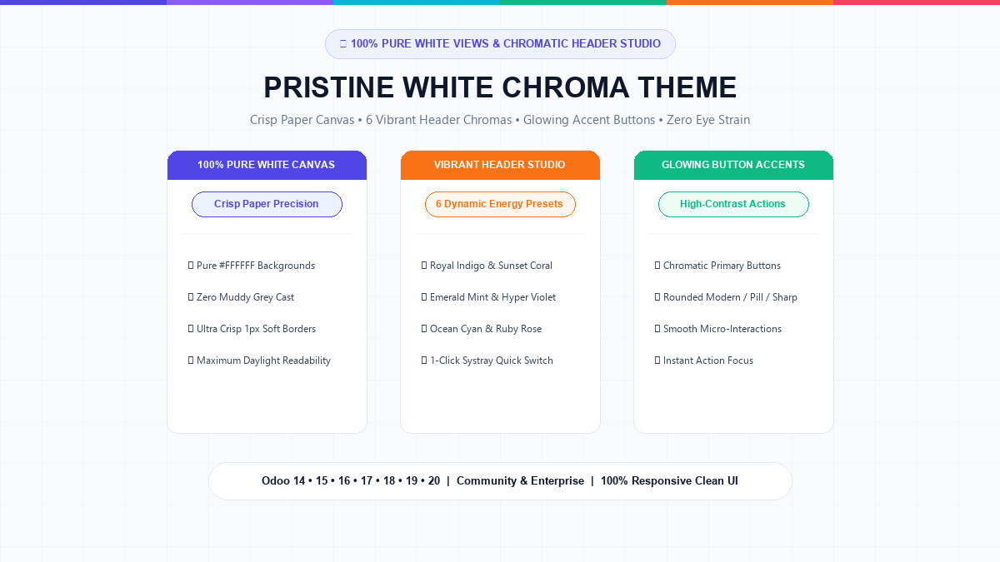
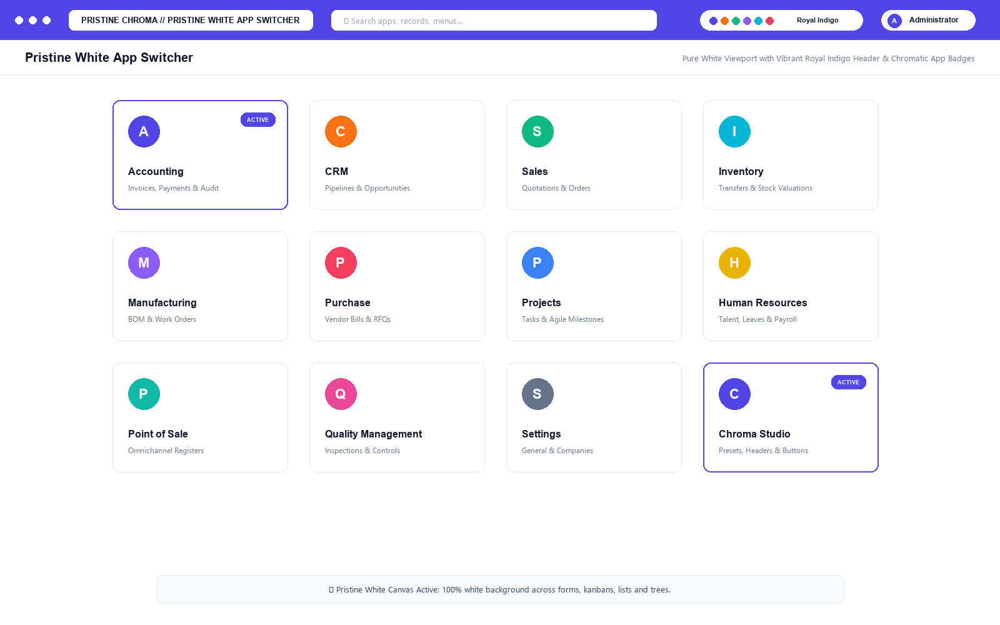
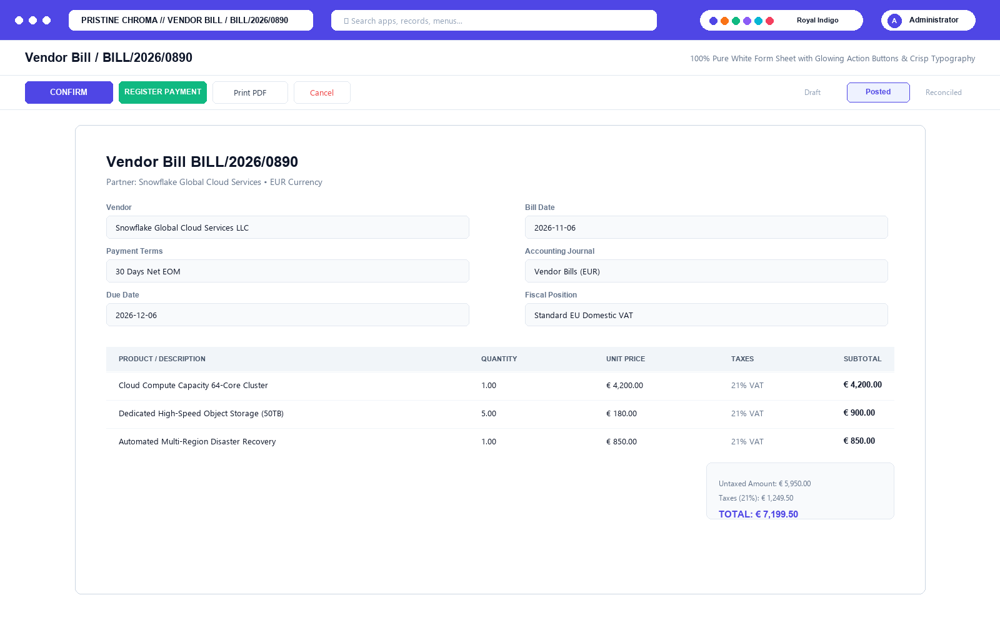
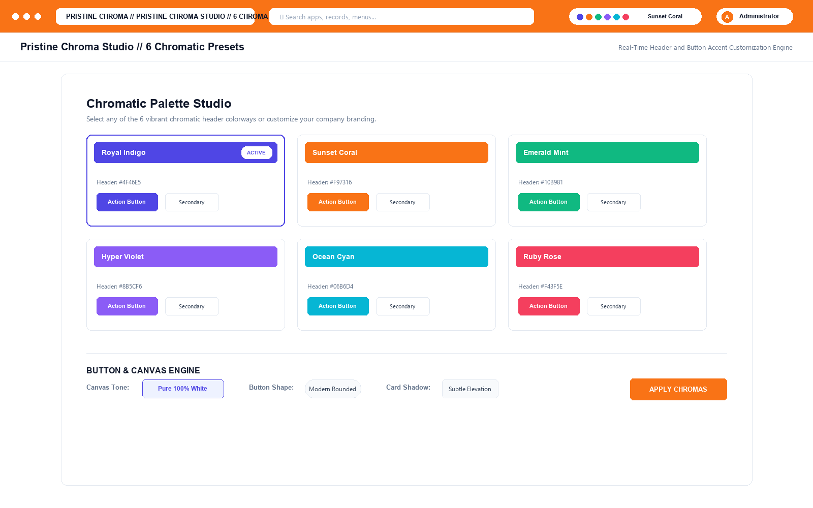
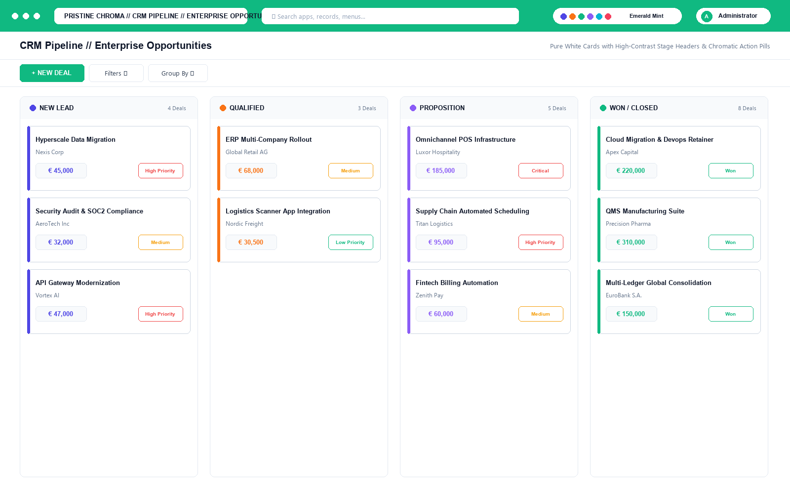
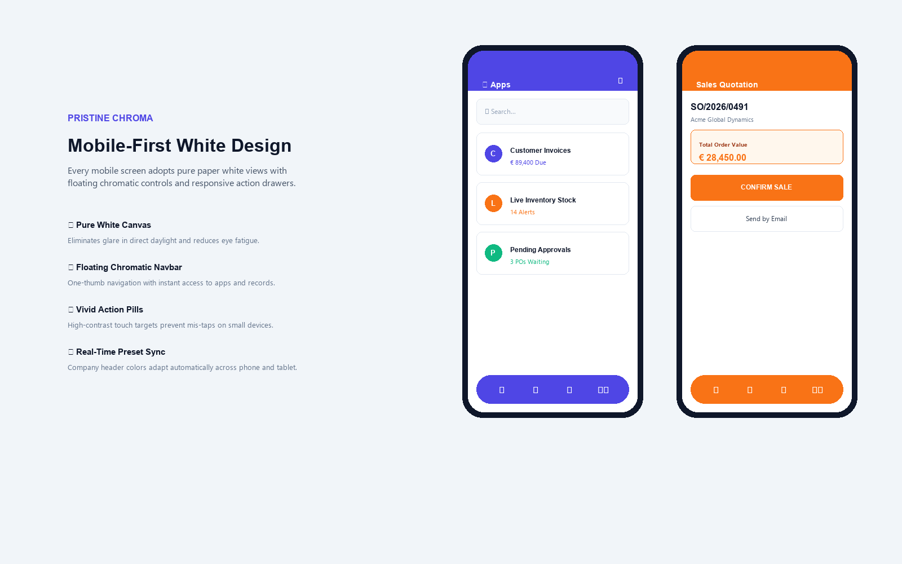
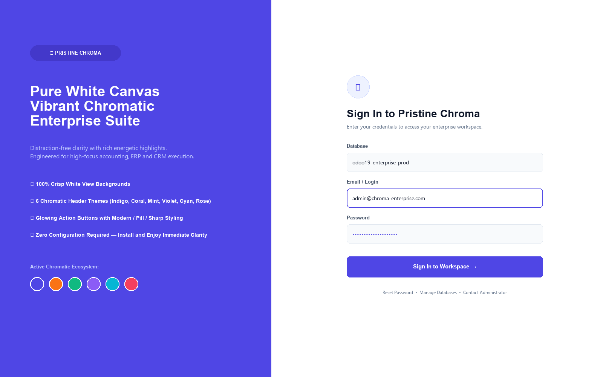

100% pure white views and form sheets paired with energetic chromatic headers and glowing action buttons. Eliminate muddy greys and enjoy razor-sharp readability with 6 vivid color presets.

Watch pure white views, glowing chromatic action buttons, and instantaneous 1-click header palette switching.
No muddy grey containers. Forms, kanbans, lists, and control panels adopt pristine #FFFFFF paper backgrounds with soft 1px hairline separation.
Royal Indigo (#4F46E5), Sunset Coral (#F97316), Emerald Mint (#10B981), Hyper Violet (#8B5CF6), Ocean Cyan (#06B6D4), and Ruby Rose (#F43F5E).
Primary execution buttons pop with rich chromatic vibrancy against the pure white canvas, guiding the user's eye directly to key business actions.
Cycle chromatic presets instantly right from your navbar without leaving your active invoice, CRM pipeline, or manufacturing order.
Pure white mobile interface with floating chromatic bottom navigation bar and thumb-friendly touch targets for field teams and warehouse ops.
Assign individual chromatic headers to different subsidiary companies so users never confuse accounts or operational subsidiaries.
Clean white app cards with chromatic badges and Royal Indigo header.

Pure white form sheet with glowing Confirm & Register Payment action buttons.

Select from 6 vivid chromatic presets with live button shape customization.

Pure white cards on white columns with chromatic stage badges and revenue pills.

Zero eye-strain daylight viewing with floating bottom navbar and vivid pills.

Modern high-conversion login experience with vibrant hero banner and pure white form.

Download and extract pristine_white_chroma_theme into your custom addons directory. Update App List and click Install.
Notice how all views, kanban columns, form sheets, and control panels instantly convert to pure 100% white (#FFFFFF), eliminating muddy grey tones.
Open the top navigation bar and observe the default Royal Indigo (#4F46E5) chromatic styling with crisp white text and glowing contrast.
Click the Chroma Palette icon in your systray to cycle between Royal Indigo, Sunset Coral, Emerald Mint, Hyper Violet, Ocean Cyan, and Ruby Rose in real time.
Navigate to Settings > Pristine Chroma Studio to fine-tune button corner radius (Modern Rounded, Pill, Sharp) and card elevation shadow intensity.
Resize your browser or test on iOS / Android to experience the responsive white layout with floating chromatic bottom navigation bar.
Run odoo-bin -i pristine_white_chroma_theme --test-enable. Confirm all 5 test cases pass with 0 errors across your target database.
Need custom chromatic branding for your company, tailored CSS overrides, or enterprise SLA assistance? Our dedicated engineering team is here to support you.